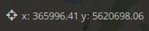
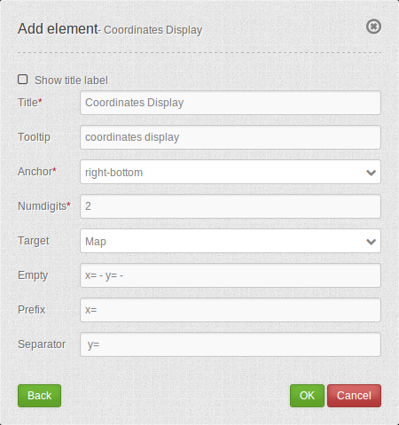

Coordinates Display¶
The coordinates display element shows your mouse position in map coordinates. The coordinates are dependent on the selected spatial reference system which may be changed in the Spatial Reference System Selector.
{kind=link}
Configuration¶
{kind=link}
- Show title label: Enable or disable text (title).
- Title: Title of the element. The title will be listed in “Layouts”. It will be indicated if “Show label” is activated.
- Tooltip: Text, that will be indicated if the mouse hovers over the button for a longer time.
- Anchor: Anchoring of the element (left-top, left-bottom, right-top, right-bottom). Determines the position of the element in the layout.
- Numdigits: Number of decimal digits of the coordinates.
- Target: ID of the map element to which the element refers.
- Emtpy: Text displayed when the mouse is not in the map (default: ‘x = - y = -‘).
- Prefix: Prefix in front of the X-coordinate (Standard ‘= x’).
- Separator: Separator following the X-coordinate and before Y-coordinate (default: ‘ y= ‘).
YAML-Definition:¶
tooltip: 'coordinates display' # text to use as tooltip
numDigits: 2 # the number of digits each coordinate shall have when being rendered, default 2
target: ~ # id of Map element to query
label: true # true/false to label coordinates display, default is false
empty: 'x= - y= -' # show the following text, if the mouse is not on the map
prefix: 'x= ' # show prefix before x-coordinate
separator: ' y= ' # show separator before y-coordinate
CSS-Styling¶
The element can be customized with the following CSS-style, for example to increase the width.
.mb-element-coordsdisplay {
width: 500px;
}
Class, Widget & Style¶
- Class: Mapbender\CoreBundle\Element\CoordinatesDisplay
- Widget: mapbender.element.coordinatesdisplay.js
- Style: mapbender.elements.css
HTTP Callbacks¶
None.
JavaScript Signals¶
None.